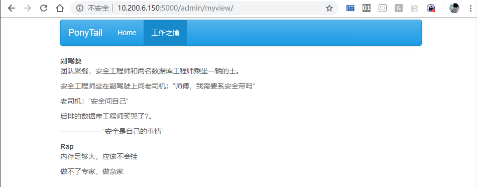
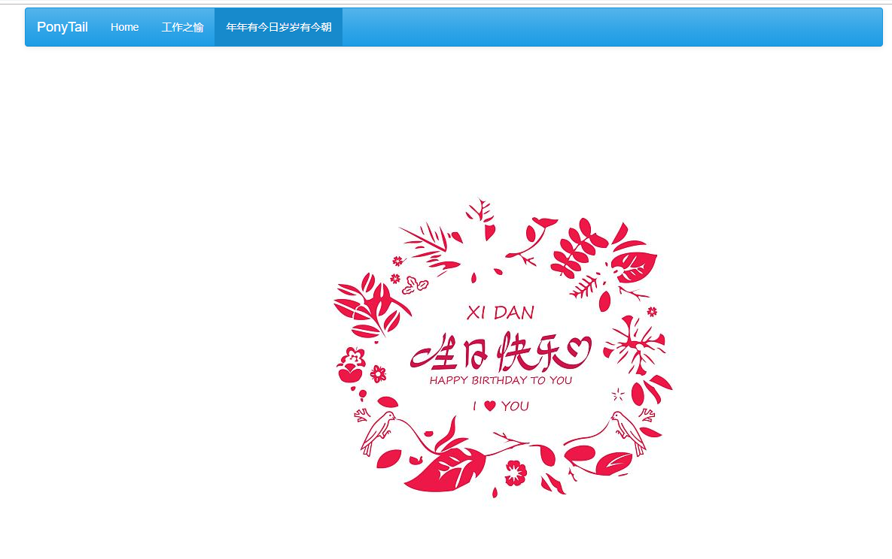

2018-11-02 大宝
1 效果图 网站添加了一个页面“工作之愉”，该页面（View）上展示的就是一些文字。

2 代码说明 class MyView(BaseView): @expose('/') def index(self): return self.render('happy.html') admin.add_view(MyView(name=u'工作之愉'))
要运行以上代码我们需要做以下步骤
3 操作指南 使用myweb用户登陆服务器，修改manage.py
[myweb@am_01 PonyTail]$ pwd /home/myweb/PonyTail [myweb@am_01 PonyTail]$ vim manage.py
manage.py代码整体如下：
from flask import Flaskfrom flask_admin import Adminfrom flask_admin import BaseView from flask_admin import expose app = Flask(__name__) app.config['FLASK_ADMIN_SWATCH' ] = 'cerulean' admin = Admin(app, name='PonyTail' , template_mode='bootstrap3' ) class Happy (BaseView ): @expose('/' def index (self ): return self.render('happy.html' ) admin.add_view(Happy(name=u'工作之愉' )) app.run(debug=True ,host='0.0.0.0' ,port=5000 )
创建新的页面/home/myweb/PonyTail/templates/happy.html
[myweb@am_01 PonyTail]$ mkdir templates [myweb@am_01 PonyTail]$ vim templates/happy.html
happy.html内容如下：
{% extends 'admin/master.html' %} {% block body%} <b > 副驾驶</b > <p > 团队聚餐，安全工程师和两名数据库工程师乘坐一辆的士。</p > <p > 安全工程师坐在副驾驶上问老司机：”师傅，我需要系安全带吗“</p > <p > 老司机：”安全问自己“</p > <p > 后排的数据库工程师笑哭了?。</p > <p > ——————“安全是自己的事情”</p > <b > Rap</b > <p > 内存足够大，应该不会挂</p > <p > 做不了专家，做杂家</p > {% endblock%}
happy.html页面语法请参考Jinjia2文档 和 html文档
运行程序
[myweb@am_01 PonyTail]$ python manage.py * Serving Flask app "manage" (lazy loading) * Environment: production WARNING: Do not use the development server in a production environment. Use a production WSGI server instead. * Debug mode: on * Running on http://0.0.0.0:5000/ (Press CTRL+C to quit) * Restarting with stat * Debugger is active! * Debugger PIN: 476-676-292
访问网站http://10.200.6.150:5000/admin/happy/则直接进入新建页面“工作之愉”。
4 课后练习 访问网站http://10.200.6.150:5000/admin/birthday/则进入新建页面”年年有今日岁岁有今朝”。

vim /home/myweb/PonyTail/templates/birthday.html
birthday.html内容如下：
{% extends 'admin/master.html' %} {% block body%} <img src ="http://img.zcool.cn/community/01cca856ceb87132f875520f11598e.jpg@1280w_1l_2o_100sh.jpg" alt ="年年有今日岁 岁有今朝" />{% endblock%}
修改manage.py
from flask import Flask from flask_admin import Admin from flask_admin import BaseView from flask_admin import expose app = Flask(__name__) app.config['FLASK_ADMIN_SWATCH' ] = 'cerulean' admin = Admin(app, name='PonyTail' , template_mode='bootstrap3' ) class Happy(BaseView): @expose('/' ) def index(self): return self.render('index.html' ) class Birthday(BaseView): @expose('/' ) def index(self): return self.render('birthday.html' ) admin.add_view(Happy(name=u'工作之愉' )) admin.add_view(Birthday(name=u'年年有今日岁岁有今朝' )) app.run(debug=True,host='0.0.0.0' ,port=5000)